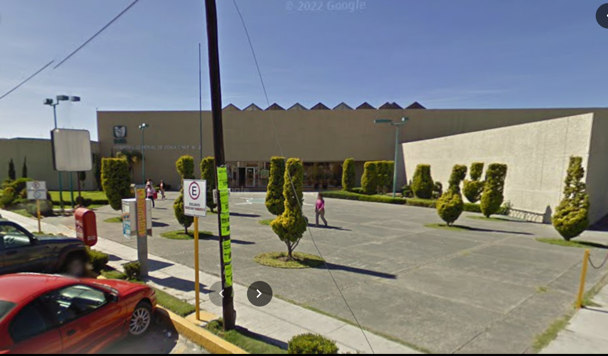

PERFIL DE LA UNIDAD
Unidad médica de Segundo Nivel de Atención Médica con Medicina Familiar; iniciamos labores el 16 de mayo de 1998, con 6 consultorios de medicina familiar, a partir del 16 de diciembre del 2000 se incluyen 10 camas ambulatorias con 3 especialidades troncales, el 25 de septiembre del 2003 inicia la atención hospitalaria con 25 camas censables, la atención de 4 especialidades troncales.

Hospital Apizaco IMSS 2009
El 1 de marzo del 2006 se amplía la atención hospitalaria con 52 camas censables y todos los servicios troncales incluyendo la atención en el servicio de Toco-Labor y Expulsión, mejorando la cobertura de atención a la salud, de la población derechohabiente y usuaria Apizaquense y circunvecinos (UMF 19, UMF 20 y UMF 48); así como extensión a la sierra norte de Puebla.

Hospital Apizaco IMSS Presente